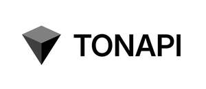

Trade Mark Journal No.2025/045 7 November 2025
UK00004266887 19 September 2025 (9,35,36,38,42)

- Class 9
- Platform software; Computer software; Software platform allowing developers to build decentralized applications in blockchain, on a decentralized and open internet platform or a distributed supercomputer; Software for Smart Contracts; Server software; Network servers; Internet servers; Communications server software; Computer network server; Virtual server software; Cryptography software.
- Class 35
- Marketing, advertising and promotion services; Product marketing; On-line advertising and marketing services; Publication of advertising material online; Online advertising via a computer communications network; All of the above related to a software platform which allows developers to build decentralized applications in blockchain, on a decentralized and open internet platform; All of the above related to a non-downloadable tool which offers access to decentralized and open internet platforms and to application programming interfaces for blockchain infrastructure and allows the automated viewing of information and the uploading of information about such decentralized and open internet platforms in blockchain; advisory, information and consultancy services relating to the aforesaid services.
- Class 36
- Financial transactions via blockchain; Financial exchange of crypto assets; Financial and monetary services; Financial and monetary transaction services in the blockchain environment; Management of crypto asset transactions using blockchain technology, including electronic funds transfer provided via blockchain technology; Advisory, information and consultancy services relating to the aforesaid services.
- Class 38
- Telecommunication services provided via Internet platforms and portals; Telecommunication services provided via platforms and portals on the Internet and other media; Providing access to platforms and portals on the Internet; Providing access to platforms on the Internet; Internet communication; All of the above related to a software platform which allows developers to build decentralized applications in blockchain, on a decentralized and open internet platform; All of the above related to a non-downloadable tool which offers access to decentralized and open internet platforms and to application programming interfaces for blockchain infrastructure and allows the automated viewing of information and the uploading of information about such decentralized and open internet platforms in blockchain; Advisory, information and consultancy services relating to the aforesaid services.
- Class 42
- Non-downloadable software tool for offering access to a decentralized and open internet platform and to an application programming interface for blockchain infrastructure; Non-downloadable software tool for running methods of a decentralized and open internet platform in blockchain; Non-downloadable software tool which permits the uploading of information about a decentralized and open internet platform in blockchain; Non-downloadable software tool for processing data in blockchain on a decentralized and open internet platform; Non-downloadable software for use as an application programming interface in blockchain infrastructure; Non-downloadable software for blockchain technology; Data authentication via blockchain; Certification of data via blockchain; Data storage via blockchain; Computer programming of smart contracts on a blockchain; Programming of software for Internet platforms; Hosting of platforms on the Internet; Programming of software for information platforms on the Internet; Constructing an internet platform for electronic commerce; Development of computer platforms; Development of software for data and multimedia content conversion from and to different protocols; Design of software for data and multimedia content conversion from and to different protocols; Development of hardware for data and multimedia content conversion from and to different protocols; Mining of crypto assets; Design, software development, maintenance and hosting services of a software platform allowing developers to build decentralized applications in blockchain, on a decentralized and open internet platform or a distributed supercomputer; Design, software development, maintenance and hosting services of a non-downloadable software tool for offering access to a decentralized and open internet platform and to an application programming interface for blockchain infrastructure; Design, software development, maintenance and hosting services of a non-downloadable software tool for running methods of a decentralized and open internet platform in blockchain; Design, software development, maintenance and hosting services of a non-downloadable software tool allowing the automated viewing of information about a decentralized and open internet platform in blockchain; Design, software development, maintenance and hosting services of a non-downloadable software tool which permits the uploading of information about a decentralized and open internet platform in blockchain; Design, software development, maintenance and hosting services of a non-downloadable software tool for processing data in blockchain on a decentralized and open internet platform; Design, software development, maintenance and hosting services of a non-downloadable software for use as an application programming interface in blockchain infrastructure; Application service provider services; Computer software customisation services; Software as a service [SaaS]; Software as a service [SAAS] services; Software as a service [SaaS] featuring software designed for the blockchain environment; Providing temporary use of non-downloadable computer software for preparing shipping documents over computer networks, intranets and the internet; Advisory, information and consultancy services relating to the aforesaid services.
TON APPS INCORPORATED
Representative: Stobbs